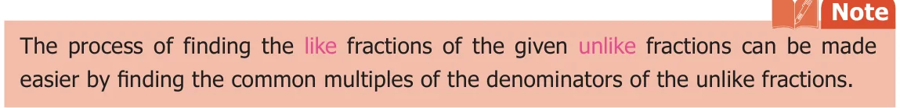
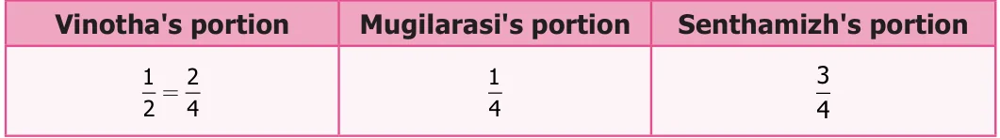
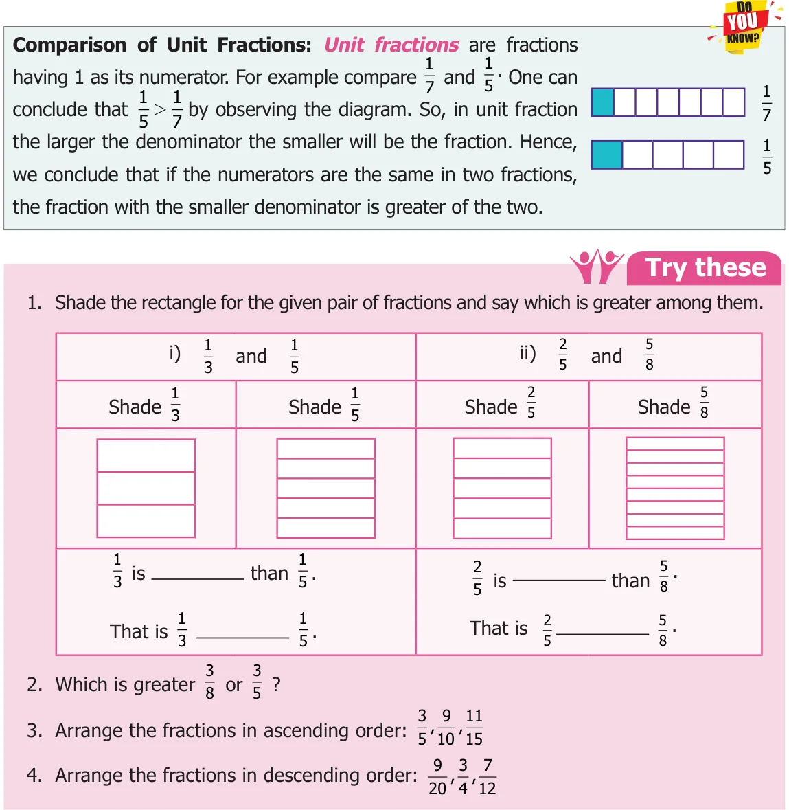

<!DOCTYPE html>
<html lang="en">
<head>
<meta charset="UTF-8">
<meta name="viewport" content="width=device-width,initial-scale=1">
<title>1.2 Comparison of Unlike Fractions — Fractions</title>
<meta name="description" content="Class 6 Mathematics · Term 3 · Fractions · 1.2 Comparison of Unlike Fractions">
<link rel="icon" href="data:image/svg+xml,<svg xmlns='http://www.w3.org/2000/svg' viewBox='0 0 100 100'><text y='.9em' font-size='90'>📘</text></svg>">
<link rel="stylesheet" href="../../../assets/book.css">
<link rel="stylesheet" href="https://cdn.jsdelivr.net/npm/katex@0.16.11/dist/katex.min.css" crossorigin="anonymous">
</head>
<body>
<header class="topbar">
<div class="topbar-in">
  <div class="crumb">
    <span class="c1"><a href="../../../index.html">Library</a> · <a href="../../index.html">Class 6 Mathematics · Term 3</a></span>
    <span class="c2">Fractions · 1.2 Comparison of Unlike Fractions</span>
  </div>
  <a class="tb-btn" data-nav="prev" href="../../01-fractions/02-intr7odu28ction-48-8-1.1/index.html" title="1.1 Intr7odu28ction 48 8">←</a>
  <details class="drawer"><summary class="tb-btn" title="Sections in this chapter">☰</summary>
<div class="drawer-panel"><div class="dh">Fractions</div><a href="../01-chapter-opener/index.html">Chapter opener</a><a href="../02-intr7odu28ction-48-8-1.1/index.html">1.1 Intr7odu28ction 48 8</a><a href="../03-comparison-of-unlike-fractions-1.2/index.html" aria-current="page">1.2 Comparison of Unlike Fractions</a><a href="../04-addition-and-subtraction-of-unlike-fractions-1.3/index.html">1.3 Addition and Subtraction of Unlike Fractions</a><a href="../05-improper-and-mixed-fractions-1.4/index.html">1.4 Improper and Mixed Fractions</a><a href="../06-addition-and-subtraction-of-mixed-fractions-1.5/index.html">1.5 Addition and Subtraction of Mixed Fractions</a><a href="../07-multiplication-of-fractions-1.6/index.html">1.6 Multiplication of Fractions</a><a href="../08-division-of-fractions-1.7/index.html">1.7 Division of Fractions</a><a href="../09-ict-corner/index.html">ICT CORNER</a><a href="../10-exercise-1.1/index.html">Exercise 1.1</a><a href="../11-miscellaneous-practice-problems/index.html">Miscellaneous Practice problems</a><a href="../12-summary/index.html">Summary</a></div></details>
  <a class="tb-btn" data-nav="next" href="../../01-fractions/04-addition-and-subtraction-of-unlike-fractions-1.3/index.html" title="1.3 Addition and Subtraction of Unlike Fractions">→</a>
  <button class="tb-btn" data-theme-toggle title="Toggle light / dark" aria-label="Toggle light or dark theme">◐</button>
</div>
<div class="progress"><span style="width:6.5%"></span></div>
</header>
<main class="wrap">
<div class="sec-head">
  <p class="eyebrow"><a href="../index.html">Chapter 1 · Fractions</a></p>
  <h1>1.2 Comparison of Unlike Fractions</h1>
  <p class="sec-meta">Textbook pages 5–7 · 3 figures</p>
</div>
<article class="prose">
<p>Think about the situation 1</p>
<p>Murugan has scored \(\frac{7}{10}\) in Science and \(\frac{9}{10}\) in Mathematics test. In which subject he has</p>
<p>performed better? It is quite easy to say his performance is better in Mathematics. Because both the tests are out of 10 marks. But, can you find the better performance of Murugan between the two test scores such as \(\frac{9}{10}\) and \(\frac{13}{20}\) in Mathematics. We need to convert both the marks as like fractions. The equivalent fraction of \(\frac{9}{10}\) is \(\frac{18}{20}\) . Now we can compare the first test score</p>
<p>with that of the second test score because both the scores are out of 20 marks. Here \(18 &gt; 13\). So, \(\frac{18}{20} &gt; \frac{13}{20}\) . Thus, Murugan has performed better in the first test.</p>
<p>Think about the situation 2</p>
<p>In a Hockey tournament, Team A played 6 matches and won 5 matches out of it. Team B played 5 matches and won 4 matches out of it. If both the teams perform consistently in this way, find out which team will win the tournament? From these we need to see which is greater \(\frac{5}{6}\) or \(\frac{4}{5}\) ? How can we find this? The</p>
<p>total number of matches played by each team differs. By finding the equivalent fractions of \(\frac{5}{6}\) and \(\frac{4}{5}\) , we can equalize the number of matches played by team A and team B.</p>
<div class="mathblock"><p>\(5 = 10 = 15 = 20 = 25 4 = 8 = 12 = 20 = 24\)</p></div>
<p>6 12 18 24 30 5 10 15 25 30</p>
<p>Note that the common denominator of equivalent fraction is 30, which is \(5 \times 6\) or \(6 \times 5\). It is the common multiple of both 5 and 6. Here \(\frac{25}{30} &gt; \frac{24}{30}\) . So Team A will win the game.</p>
<h3 class="callout-h" id="s-note">Note</h3>
<p>To compare two or more unlike fractions, we have to convert them into like fractions. These like fractions are the equivalent fractions of the given fractions. The denominator of the like fractions is the Least Common Multiple (LCM) of the denominators of the given unlike fractions.</p>
<p>Example 2 Madhu ate \(\frac{2}{5}\) of the chocolate bar and Nandhini ate \(\frac{1}{3}\) of the chocolate bar. Who has eaten more? Solution The portion of the chocolate eaten by Madhu \(= \frac{2}{5}\) The portion of the chocolate eaten by Nandhini \(= \frac{1}{3}\) Here the portions of the chocolates eaten by both differ.</p>
<p>To make it same, their equivalent fractions are to be found. Finding the equivalent fractions of \(\frac{2}{5}\) and \(\frac{1}{3}\) having common denominators are the same as finding the least common multiple of the denominators of the given fractions. Hence \(\frac{22 \times 36}{55 \times 315} = =\) and \(\frac{11 \times 55}{33 \times 515} = =\) So, \(\frac{6}{15} &gt; \frac{5}{15}\) Therefore, we can conclude that Madhu has eaten more chocolate bar.</p>
<figure class="fig wide"></figure>
<p>Example 3 Vinotha, Mugilarasi, Senthamizh were participating in a water filling</p>
<p>competition. Each one was given a bottle of equal volume to fill water in it within 30 seconds. If Vinotha filled \(\frac{1}{2}\) portion of her bottle, Senthamizh filled \(\frac{3}{4}\) portion of her bottle and Mugilarasi filled \(\frac{1}{4}\) portion of her bottle, then who would get the first, second and third prize?</p>
<p>Solution The equivalent fractions need to be written until the denominator becomes 4 which is the LCM of 2 and 4. Equivalent fraction of \(\frac{1}{2}\) is \(\frac{2}{4}\)</p>
<figure class="fig table-fig wide"></figure>
<p>Here \(\frac{123}{444} &lt; &lt;\) . Therefore, Senthamizh would get the first prize, Vinotha would get the second prize and Mugilarasi would get the third prize.</p>
<p>Example 4 Arrange \(\frac{214}{369}\) in ascending order. Solution Equivalent fractions of \(\frac{2}{3}\) are \(\frac{46810}{691215}\) , , , , \(\frac{12}{18}\) ,... Equivalent fractions of \(\frac{1}{6}\) are \(\frac{2}{12}\) , \(\frac{3}{18}\) ,... Equivalent fraction of \(\frac{4}{9}\) is \(\frac{8}{18}\) ,...</p>
<p>, ,</p>
<div class="mathblock"><p>Therefore \(\frac{3812}{181818}\)</p></div>
<p>\(&lt; &lt;\)</p>
<p>The ascending order of given fractions is \(\frac{142}{693}\) , , .</p>
<figure class="fig table-fig wide"></figure>
</article>
<nav class="pager"><a class="" data-nav="prev" href="../../01-fractions/02-intr7odu28ction-48-8-1.1/index.html"><span class="dir">← Previous</span><span class="t">1.1 Intr7odu28ction 48 8</span><span class="ch">Fractions</span></a><a class="nx" data-nav="next" href="../../01-fractions/04-addition-and-subtraction-of-unlike-fractions-1.3/index.html"><span class="dir">Next →</span><span class="t">1.3 Addition and Subtraction of Unlike Fractions</span><span class="ch">Fractions</span></a></nav>
</main><footer class="site">Generated from the source textbook PDFs · text, figures and exercises belong to their respective publishers.</footer><script defer src="https://cdn.jsdelivr.net/npm/katex@0.16.11/dist/katex.min.js" crossorigin="anonymous"></script>
<script defer src="https://cdn.jsdelivr.net/npm/katex@0.16.11/dist/contrib/auto-render.min.js" crossorigin="anonymous"
  onload="renderMathInElement(document.body,{delimiters:[
    {left:'\\(',right:'\\)',display:false},
    {left:'$$',right:'$$',display:true},
    {left:'\\[',right:'\\]',display:true}],throwOnError:false,ignoredTags:['script','noscript','style','textarea','pre','code']})"></script>
<script src="../../../assets/book.js"></script>
</body>
</html>
